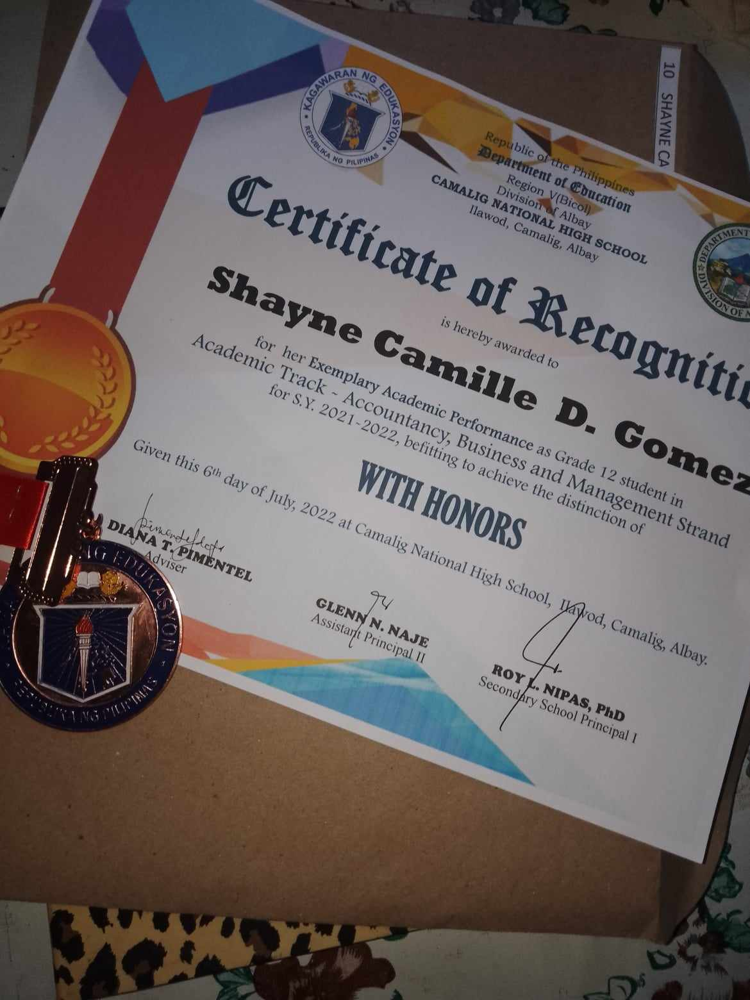
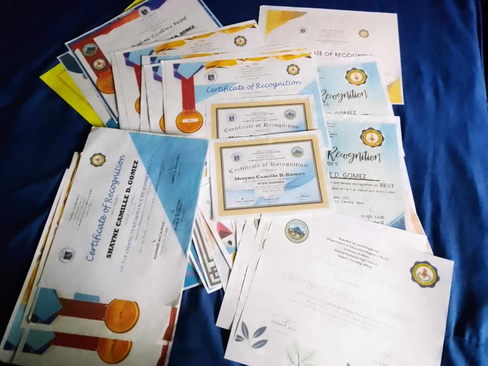
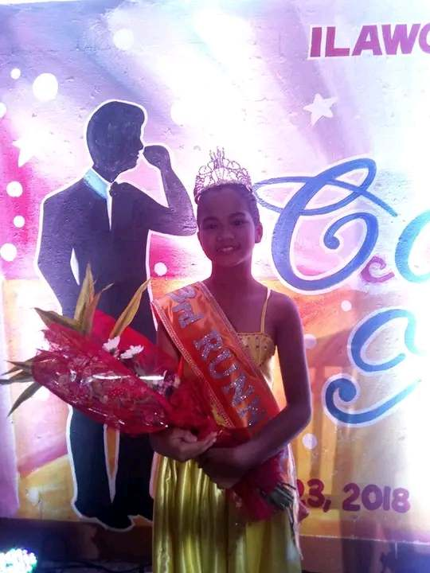
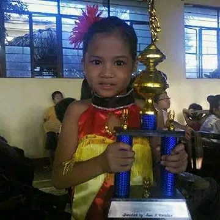
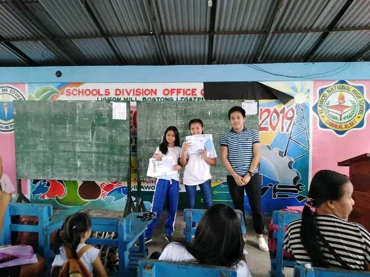
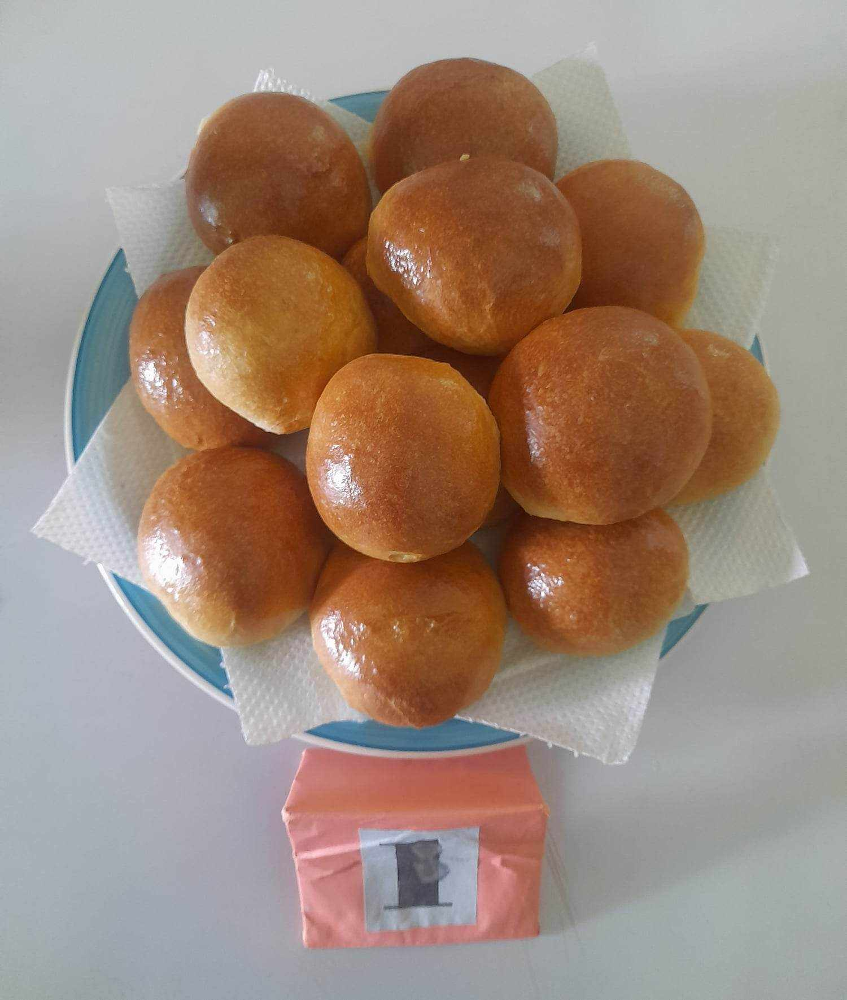
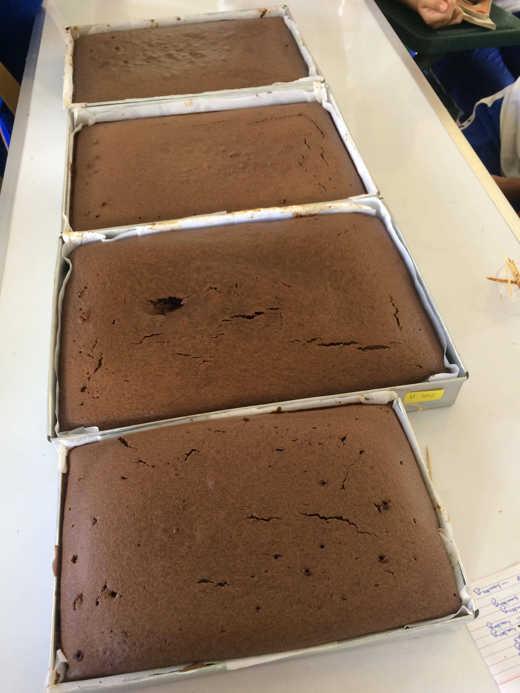
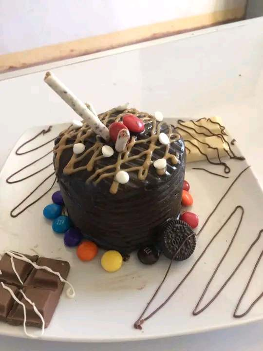

School Activities Award


Certificates (2018-2022)Description: Received throughout my junior and senior high journey. It was overwhelming to receive this award. Skills Acquired: Leadership, Analytical Skills |

Ms. Ilawod National High PageantDescription: Won the school pageant, crowned as the third runner-up. It was in my 8th grade. Skills Acquired: Communication, Analytical Skills |

Ballroom DancingDescription: Achieved third runner-up in ballroom dancing. It was my first taste of victory in this category. Skills Acquired: Performing Arts |

Certificates (2018-2022)Description: Received an award for the school year 2017-2018. Skills Acquired: Performing Arts |
Baking

BreadDescription: Baked this bread with my groupmates. It was a delightful experience, and it tasted great. Skills Acquired: Cooking, Cooperation |

Chocolate CakeDescription: Successfully baked this cake with my groupmates. It has a delicious taste. Skills Acquired: Collaboration, Communication |

PlatingDescription: First experience with plating. It was a fun and creative process. Skills Acquired: Analytical Skills, Designing |
Writing Poems and Stories
.png)
MusikaDescription: Wrote this prose inspired by my love for music. It reflects how music impacts my emotions. Skills Acquired: Writing, Analytical Skills, Reading, Viewing |
.png)
True DiamondDescription: Inspired by the song "Scars to Your Beautiful," this prose conveys a motivational message. Skills Acquired: Writing, Viewing, Analytical Skills |
WEB SYSTEM
.png)
Token CoreDescription: Developed my very first system, an e-commerce website called Token Core. Though not perfect, it was a gratifying and challenging experience. Skills Acquired: Analytical Skills, Memorization, Coding |